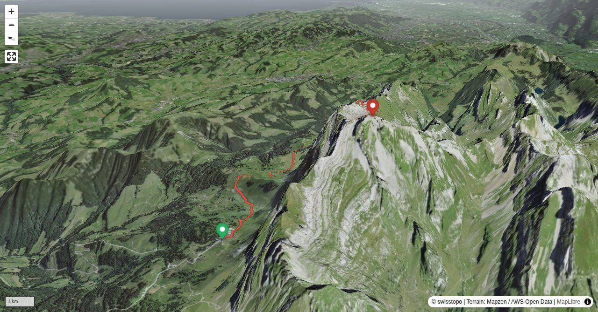

With the usual and Chammhalden routes this is the third itinerary on the Säntis north face (second in terms of difficulty). Steep, equipped with steel cables and marked white-blue (alpine hiking route), it leads 600 metres of vertical height to Hintere Öhrligrueb. The detour to Öhrlikopf (on the national map new "Öhrlikopf") with some scrambling in shell limestone seems more difficult than it really is. Towards the end of the tour the often crowded mountain hiking route Ebenalp-Schäfler-Säntis can be avoided by undertaking the described, demanding ridge hike.
Säntis is the highest peak of the Alpstein range and a unique viewpoint on the north-eastern end of the Swiss Alps. From here the five neighbouring countries of Switzerland can be seen. The border of the St. Gall and Appenzell cantons meets at the summit. The first cabin to house visitors was built in 1846 and since then has been continuously enlarged to become the guesthouse it is today. In 1882 the first meteorological station was installed, while in the second half of the 20th century the radio transmitting installations were added. The aerial cableway from Schwägalp was built between 1933 and 1935. Transporting passengers metres of vertical height in 10 minutes, it is one of the most popular cableways in Switzerland.
Quick Facts
| Summit elevation | 2502 m |
|---|---|
| Difficulty | SAC T4+ Check the route notes below for terrain and commitment level. Guide |
| Trailhead | Schwägalp, Säntis aerial cableway |
| Distance | 10.1 km (out-and-back) |
| Total ascent | ~1351 m |
| Elevation range | 1308-2501 m |
| Route sources | SAC Route Portal |
Photos


Planning
i
i
sac_scale (precise T1–T6) with
swissTLM3D Wanderwegart
fallback where OSM is silent (coarser T2/T3 and T4+ buckets).
Coverage: OSM 56.2% · swisstopo 42.7% · unknown 0.0%.Elevations computed from the inlined GPX track (SwissTopo height API).
Loading forecast…
Start: Schwägalp, Säntis aerial cableway (1346 m)
End: Säntis, Bergstation (2502 m)
3D Terrain View

Route Details
From Schwägalp via Nasenlöcher
- Schwägalp - Potersalp - Nasenlöcher - Hintere Öhrligrueb - Öhrlikopf: 3 h Öhrlikopf - Hintere Öhrligrueb - Höchnideri saddle P. 2121 - Blauschnee - Säntis: 1½ h Without the detour to Öhrlikopf ½ h less.
Terrain & safety
The most exposed passages of the Nasenlöcher route are equipped with steel cables. Some passages require easy climbing (grade I). After rainfall the itinerary remains wet for a rather long time. In this case additional caution is advised. The bonus of the tour, Öhrlikopf, is climbed through chimneys (grade I). The loose rubble on the faces requires attention when several climbers are on the way to the summit.
Source: SAC Route Portal
Field Reference
| Trailhead | Schwägalp, Säntis aerial cableway | 47.25626, 9.31847 |
|---|---|---|
| Summit | Säntis (2502 m) | 47.24937, 9.34334 |
| End | Säntis, Bergstation (2502 m) | 47.25630, 9.31850 |
Coordinates are WGS84 decimal degrees (lat, lon). Emergency: 112 (general) or 1414 (Rega air rescue). Page URL: